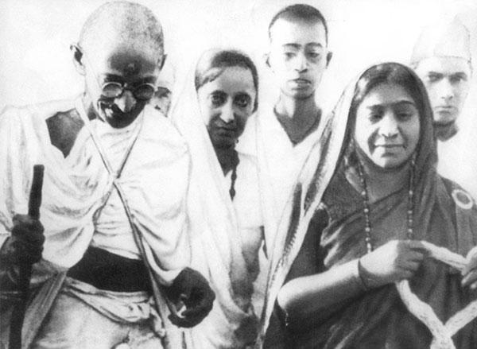
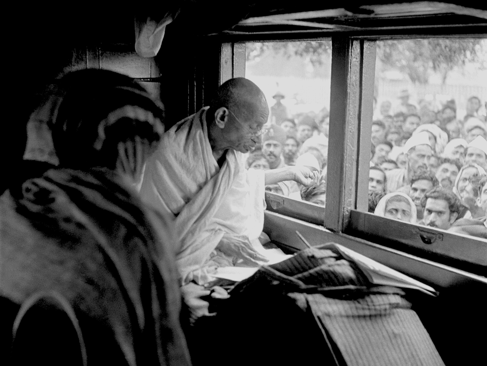

A man is but the product of his thoughts. What he thinks, he becomes.
Father of the Nation · Voice of Peace
October 2, 1869 — January 30, 1948
Discover His StoryFirst they ignore you, then they laugh at you, then they fight you, then you win.— Mahatma Gandhi
Who Was He?
Mahatma Gandhi was born on October 2, 1869, in Porbandar, India. He became the leader of India's nonviolent independence movement against British rule and is known worldwide for his philosophy of peaceful resistance — a concept he called Satyagraha.
I chose Gandhi because of one simple, remarkable truth: he defeated an empire without firing a single shot. In a world that so often responds to power with force, Gandhi proved that moral courage and persistence are the most powerful weapons a person can carry.
Read Full Biography →
Salt March, 1930
Gandhi at the AshramMy Reason
What inspires me most is that Gandhi was an ordinary person who created extraordinary, lasting change. He faced imprisonment, violence, and ridicule — yet he never abandoned his principles. He showed that your morality is more powerful than physical strength, and that persistence in the face of injustice is the truest form of courage.
Dive deeper into the life, struggles, and impact of one of history's greatest figures.